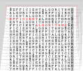

CS 566 – Efficient Algorithms (Winter 2025-26)

Efficient Algorithms (CS 566) is a second module in algorithms (Aufbaumodul) that covers common strategies for designing algorithms and data structures, illustrated through a variety of examples. While the selection of examples takes their relevance in applications into account, the module also focuses at teaching formal techniques for proving correctness and performance guarantees.
Quick links
Slido ⋅ Live ⋅ ILIAS ⋅ Campuswire ⋅ Question Gallery ⋅ Units
Taking CS 566 for conditional admission to an international MSc program?
$\longrightarrow$ Read
“CS 566 for Credit vs. for conditional admission”!
Lectures
There will be synchronous interactive lectures, starting from October 13. Live participation is expected; recordings will be available on a best-effort basis.
Our regular lecture slots are
- Monday 16:15 – 17:45 (s.t.) in Hörsaalgebäude H|05, Hörsaal B;
- Tuesday 14:15 – 15:45 (s.t.) in Hörsaalgebäude H|05, Hörsaal D;
Units
The module will consist of the following units; each has unit subpage linked in the table with slides, lecture notes, and video recordings for that unit.
| Week | w/c (Mon) | Lecture Topics | In-class Sheet | Exercise Sheet |
|---|---|---|---|---|
| 1 | 2025-10-13 | Unit 0: Administrativa | — | — |
| Unit 1: Proof Techniques | — | — | ||
| 2 | 2025-10-20 | Unit 2: Machines & Models | Präsenzblatt 0 | Blatt 1 de ⋅ eng |
| 3 | 2025-10-27 | Unit 3: Fundamental Data Structures | Präsenzblatt 1 | Blatt 2 de ⋅ eng |
| 2025-10-28 | —no lectures on Tuesday— | Blatt 2 Code | ||
| 4 | 2025-11-03 | Unit 4: Efficient Sorting | Präsenzblatt 2 | Blatt 3 de ⋅ eng |
| 5 | 2025-11-10 | Unit 5: Divide & Conquer | Präsenzblatt 3 | Blatt 4 de ⋅ eng |
| 6 | 2025-11-17 | Unit 6: String Matching | Sheet 5 | |
| 7 | 2025-11-24 | Unit 7: Text Compression | Sheet 6 | |
| 8 | 2025-12-01 | Unit 8: Clever Codes | Sheet 7 | |
| 9 | 2025-12-08 | Unit 9: Graph Algorithms | Sheet 8 | |
| 10 | 2025-12-15 | Unit 10: Parallel Algorithms | Sheet 9 | |
| — | 2025-12-22 | Xmas break | — | — |
| — | 2025-12-29 | Xmas break | — | — |
| — | 2026-01-05 | Xmas break | — | — |
| 11 | 2026-01-12 | Unit 11: Greedy Algorithms | Sheet 10 | |
| 12 | 2026-01-19 | Unit 12: Dynamic Programming | Sheet 11 | |
| 13 | 2026-01-26 | Unit 13: Text Indexing | Sheet 12 | |
| 14 | 2026-02-02 | Unit 14: Range-Min Queries | ||
| 15 | 2026-02-09 | Recap, Exam Q&A |
Tutorials (Übungen)
There will be weekly exercises sheets with practice problems and group submissions. Further details will be given in class.
Solutions are discussed in small-group tutorials, led by Finn Moltmann and Arsenij Winkel; check ILIAS for your group assignment. The first tutorial classes will be held in the week of October 20.
Online Tools
We will use several tools and services that have proven effective for this module.
Campuswire
Campuswire is our main online communication channel.
Any questions relating to the module should be posted on Campuswire on the question & answer forum, the “class feed”. You can post anonymously if you prefer, and you are encouraged to answer each other’s questions, as well!
You can also use the platform for (social or topical) discussions in the chat rooms.
ILIAS
We will use the university’s official learning management system ILIAS for examination-related information and marks.
Slido
During the live lectures, I will use Slido for interactive parts.
Exam Question Gallery
We maintain a collaborative exam question gallery on Papeeria.
(You may have to create a free account.)
Join us in making this a great resource for preparation for the exam –
the better your question, the more likely they are to inspire the final exam.
This is also a chance to learn or practice some $\LaTeX{}$.
Exam & Assessment
The module mark is based on the final examination. To be admitted to the exam, you must achieve a passing grade in the tutorials.
More details will be given in class.
CS 566 for Credit vs. for conditional admission
The for-credit version of CS 566 is predominantly taken by students on the German undergrad programs in Marburg and is a compulsory module for the BSc Data Science program. It must hence be offered in German, including examinations.
If you are taking CS 566 to satisfy the prerequisites of a conditional admission to an international Master’s program, you will be offered a separate examination in English that is based on the provided English self-study material instead of the German lectures. You are, however, welcome and encouraged to attend lectures and tutorials, and in particular to join and use the Campuswire Q&A forum.
Note: If you are required to take the CS 566 prerequisite module as part of your admission, you cannot take CS 566 for credit in your program.
Further reading
There are many good algorithms textbooks, but no single definitive one that covers all topics of this module (in the way I want them presented!). Indeed, I have been cherrypicking the – in my opinion – most effective descriptions from a variety of sources; check the individual units for details.